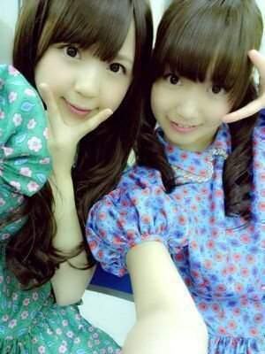
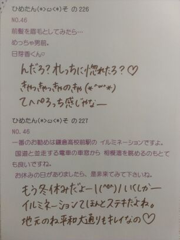
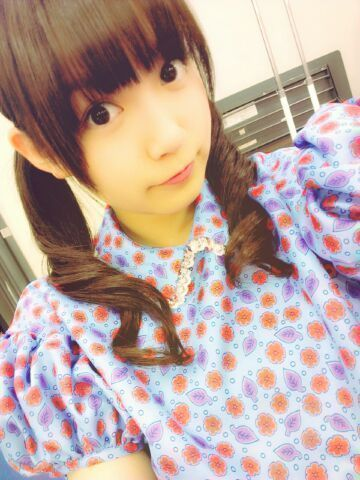
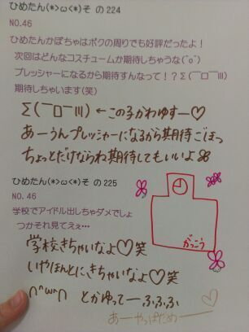
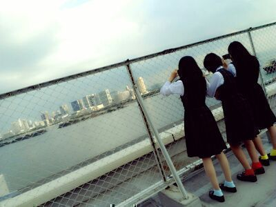
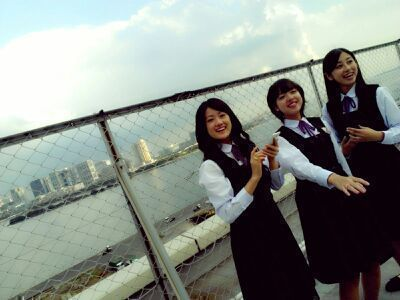
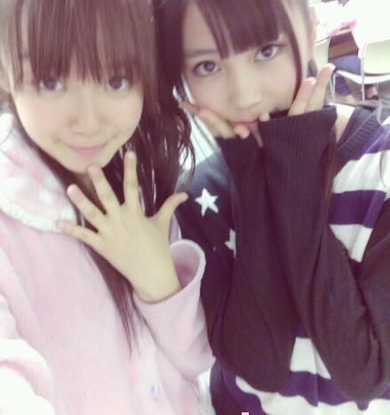
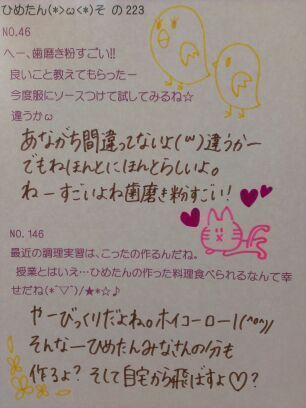
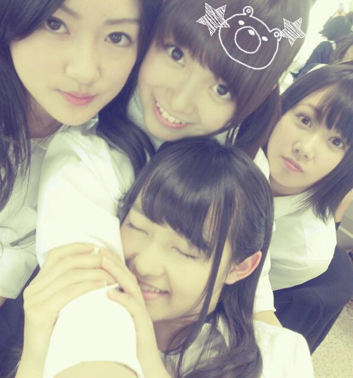

.
てことで
ひめたんの個人PV入ってるのは
Type Bでしたー
みなさんよろしくね＼(^^)／★
あらためておうちで
みんなの個人PVみたんだけどね
まーみんな頑張ったねー！
素 の部分とか
こーゆーの出るから素敵な企画だねー
でも33人全員のみたら
映画1本分くらいの時間だから
映画見た気分になれるね(*^ω^*)
な、なれる。なろうず！
それと収録曲も全部聴いたよー
今はね やさしさなら間に合ってる が
頭から離れんで困ってるー
あ春のメロディーも聴いてね←
ひめたんの歌パート探してみてねー
PVみたらなんとなーく
わかると思うけど探してみてね！
あ別に
やさしさなら間に合ってる [Type A]
春のメロディー [Type C]
全部宣伝してやろうにやにやとか
そーゆことは
まったく考えてないからねー♪
ふふふ(´・ω・｀)


 ウォーキングは決まったコースあるの？それとも思いつき？また、何かを目的に行くとか？教えて。
ウォーキングは決まったコースあるの？それとも思いつき？また、何かを目的に行くとか？教えて。思いつき。目的もあんまし設定しない。
時間だけ決めて、直感で楽しそうだなーって思った方に曲がる。
...それでえらい目になったこともしばしば。でも気にしなーいー♪
ひめたんは暇すぎてすることがなくてどうしようもないとき，何をして暇つぶしますか?究極に暇な時は
誰かにmailとばして絡む。笑
寝る。歌う。こんなかんじー(*´∀`*)
ひめたんの一番印象に残ってる冬の思いで教えて、語って〜去年の冬は
かわごってぃ(川後陽菜chan)とクリスマスしてお正月したのー＊
温泉とかも行ったなー楽しかったな(ω)
東京の冬は17時には真っ暗だもんね
なんかー寂しいよねー
あと、こっち来てから道路に雪が積もってるの見てビビったかな。
広島ってそんな積もることないからさー
最近の広島の幼稚園生さんは
「俺、雪積もったの見たことあるんだぜ？(どや)」
なんて会話してるって誰かから聞いたことあるからねー
と語ってみましたがいかがでしょ◎
今見たい映画は？ 悪の教典見た？今なんの映画やってるかわからんのよね(´><)
調べてみよかなーっと♪
悪の教典って、怖い系じゃない？
夢に出てくる系じゃない...よね？
満点何科目とりましたか？えっとー...
えっと何て答えればいいのこれー？
えっとーえっとえっとえっとー
(´・ω・｀)
 ひめたんは世界史と日本史どっちが好きでしたか？
ひめたんは世界史と日本史どっちが好きでしたか？日本史のがすきかなー。
世界史はカタカナいぱーいでてくるけ
覚えれないもーん(・∀・)ぱ
友達がすんごい語呂作るから
いっつもそれテスト前に教えてもらうー
(きのう)の地震の時、ひめたんは何をしてたの？「気づかなかった」って、、、(・_・;)熟睡中だったとか？ちょうど駅の改札のとこにいたのー
ずーっとガタゴトなるじゃん改札って！
あんましよくわからんかった←
地元の子が「地震大丈夫？」て連絡くれて、それではじめて知りましたねー
UZA踊れるかな？踊れんです(´;ω;`)
Beginnerなら踊れる(´;ω;`)
あ会いたかったも踊れる(´;ω;`)
今回もたくさん握手券を買っちゃったのですが
「１人の前で歌う」のもいいけど
他のレーンに迷惑をかけない範囲で
「ひめきゅんさん、みんなの前で歌う」
っていうのは出来ますか？実現できたら素敵な企画だと思う(*>ω<*)!!!
でもね、受付さんや剥がしさんや運営さんに聞いてみないとだめかも←
その辺の判断は、ひめたんにはちょっとできないかなー。
ありがとーう♪

(＊´・ω・＊)ひめたん

あのね
春頃に一瞬ハマったアロマキャンドルを
久々に引っ張りだしてみたら
なんかほっこりしたわず
ほんのりバニラの香りがして
なんだかちょっとだけ
おしゃれな雰囲気かもしだしてたわず
キャンドルナイトしたわず
わず(*・ω・*)わずわず
なんだか昨日はいっぱーい寝た
お昼寝したうえに夜もはよ寝たー
あんましお腹も空かんかったけどね
でねあのね
いくちゃん(生田絵梨花chan)と
おんなしタイミングでおんなし時間だけ
お昼寝してたのー！
14時くらいに一瞬mailしてて
そっからお互い寝ちゃったみたいで
17時とかに起きてから
「ごめん寝てたー」て打ったら
「あたしもー」ってなった＊
おはよー＼(^^)／
で、そっから
いくちゃんの夜ごはんまで
ずーっとmailしてましたとさ。
zeppライブが終わったら
ろってぃー(川村真洋chan)と
カラオケいく予定(｀・ω・´)びば!
ううー寒いいいー

 最近聞いた曲で好きな曲とかあったら教えて？
最近聞いた曲で好きな曲とかあったら教えて？NMBさんの「北川謙二」が頭から離れん＼(^^)／
最近ならback numberさんの「青い春」、
GReeeeNさんの「雪の音」とかも好きー♪
落ち込んだり、気持ちを持ち上げる時に聴く曲はありますか？落ちるときは奈落の底まで落ちてしまいたい人のでね(´。・ω・。｀)てへ
そゆ時はGReeeeNさんの「涙空」とか
bumpさんの「涙のふるさと」とか
しっとりバラード系をリピートしてるとスッキリしてくるかなー
歌詞もいいのよねこれがねっ
ひめたんは山口県の光市って知ってる？聞いたことあるよー！
山口は広島のお隣さんー♪
あっしは結構女の子と話すのが苦手で、握手会でも話したいことの半分位しか話せないんだよね〜。これってなにか解決方法あるかな〜!?あっし...かっくいー響きだねー
えーどうなんだろうかー
話すときに相手の目をみて話せば緊張しないんじゃないかな！
びーむ(<・ω・>)
コートを買おうと思ってるんだけどなかなか色が選べない。ひめたんは何色がいいと思う？ひめたんは紺のダッフル買ったよー
キャメルとかも可愛いよね！
いまテラスハウスとかいう番組やってるけどルームシェアとかしてみたいですか？ルームシェアは楽しそうだけど、
ひめたんお片付けできない人なので
お相手さんが辛たんかもしれない(´;ω;`)
放送部なんですけど、どうしたら番組制作が上手くなりますか？おおー応援するぞ後輩さんよ＼(^^)／
何だろうね。ひめたんは制作ってかアナウンスの声だけ参加してたから、いいアドバイスあげられるかわからんけど
一番は、学生さんにとって身近な、共感できる話題選びが大事だと思う。
あとはテレビだからこそ演出できる効果ってのがあるだろうから、そーゆのを上手く活用することかな。
ただインタビューするだけじゃなくて
自分たちが求めてる答えをしてくれるだろうなーって人を取材することも大切よー
ふぁいとー♪♪
綺麗な写真を撮るにはどうすればいい（＾ω＾）？根気よくいろんな角度、いろんなパターンで撮ってみたらどうかしら？
あとはあれだね、愛だよ愛(∀)きゃ
 握手の時のひめたんはＵＭ（上目ｗ使い）ＮＫ（なつき）ＭＯ（見送り）の技がありますがＴＧ技も持っています。
握手の時のひめたんはＵＭ（上目ｗ使い）ＮＫ（なつき）ＭＯ（見送り）の技がありますがＴＧ技も持っています。
さて、ＴＧはどんな技でしょうか？ 分かるかな？？な、なんじゃそりゃー( ・ω・ノ)ノ
[T...ときどき G...がっついてくる]はー？
いやーそんながっついてないけどさっ
その...ねっ///

(＊´・ω・＊)ひめたん
春のメロディー
PV撮影エピソード拍手っ\＊/
まずー
ひめたんはあかの靴下だからね
把握よろしくね(｀・ω・´)
ジャンパースカートを着ると
中学生時代を思い出しますねー♪るん
で
でーですよ
まず、今回は景色を見てるとなんとなく勘づくかなーと思うけど
都内で撮りました＼(^^)／
とあるビルの屋上なんだけど
めちゃきれいなのよね東京！

左から
ちま(樋口日奈chan)
まあや(和田まあやchan)
るんるん(斎藤ちはるchan)
ですねー
これなかなかのカメラワークだと
思うでしょみなさんー？
この写真撮ったのはひめたんねー
3人は屋上から見える
お台場の風景を撮ってるのね(^^)
そして作品の中でひめたん
糸電話してたんだけどね
あの糸はかなりん(中田花奈chan)と
繋がってるのー(*>ω<｀*)
でね、糸電話をふたつ用意してね、
それをクロスさせるとね
直接的には繋がってないはずの相手の
声も微かに聞こえるの！
あのPVで説明すると
かなりんの声だけじゃなくて
みさみさ(衛藤美彩chan)と
ねねころりーた(伊藤寧々chan)の声も
聞こえるてこと(^^)
えややこしい？え？
じゃーね、もうね、糸電話しよう笑

あ、昨日の写真は、あのー...
間違えてパジャマ
着てきちゃったわけでもなく、
面倒だからパジャマ
着てきちゃったわけでもなく...
パジャマって言うから語弊があるのよ。
by.まま
ゥルゥーム・ウェアー(終始巻き舌)よ。
by.妹
....そゆことです( ^^ )
あの、だから
なんでルームウェアなのよーとか
そゆことは聞かないのー♪

 雨の日は好き？
雨の日は好き？ローファーが締まって足痛くなるから
最近はあんましすきじゃないかなー
長靴履いてるときに水溜まりに足つっこむのはすきだよ(^^)♪
雨の日の思い出なぞありますか？ 雨の日のってか傘に関するエピソードで
ひめたんがはじめてサンタさんにお願いしたのが、幼稚園生のときで、
カエルさんの傘だったなあーって。
カエルさん...。
あっあと、小２の時にピンクの丈夫なジャンプ傘持ってたんだけど
全体重かけて破壊したことある(*>ω<*)
てへぺろっち感じやな///
12/1のさゆにゃんブログにひめたんが楽しそうに授業してる写真が載ってたんだけど、何の授業だったのかな？[問題:9÷0=?]について
あつくあつく語りましたとさー♪
ひめたんにとってメンバーはどういう存在？
ひめたんはメンバー紹介とかしてくれないの？ふぁみりーさーん*\(^^)/*
メンバーとかお友達とかってのを超えたものがあるよねっ
メンバー紹介かあ。
みなさんがしてほしかったらするけど、考えてなかったなー
紹介してくれた子にお返し紹介みたいなのはしてきたけどねんっ
せいたんの誕生日祝いブログに書いてくれないの？ブログで生誕やった時期もあったけど、
今は本人にだけmailで伝えるようにしてます(^^)
すぺしゃる感ってやつです。ふふふ
せいたんやねねころみたいに背が小さいメンバーがもしひめたんより大きくて見下ろされたらどんな気分？せいたんは何となく受け入れるけど
ねねころ(伊藤寧々chan)かあ。
どんなだろうーいやぁああー
川後のひなは元気かな？一緒にいる時は何してるの？(^ ^)川後のひな元気だよ＼^^／★
かわごってぃ(川後陽菜chan)ね、昨日会った時は前髪がいい感じすぎたよー
一緒にいるときは川後のツンツン受けまくってるー∩^ω^∩
川後はねメールだとデレるのよ＊ふふ
ひめたん、俺の妹になってくれるおにいちゃーんて呼ぶよ？///
お、おにいちゃーん///きゃ(ω)
 flumpoolってききますか？
flumpoolってききますか？flumpoolさんのメジャーな曲は聴くけど
がっつしアルバムどーんとか聴いたことないなあ。
そういわれたら気になってきた！
タワレコータワレコいってくるー
(＊´・ω・＊)ひめたん
かわごってぃーぴょーんぬ♪

かわごってぃ(川後陽菜chan)ですねー
写真はマンフリの時のですねー
ひめたんいろいろあってパジャマだけど
まっ気にしないでねー♪
き、気にしないでね///
日曜日は収録があった(・∀・)よ
ってゆーと次のセリフは決まって
「詳しくはオンエアをお楽しみにー」
しか言えないんだけどねー
でもあれだなー
テスト週間だったから
みんなととうぶん会ってなかったから
全員集合は嬉しかったな∩^ω^∩
楽屋はなんかね
いかしたマッサージチェアとかあってね
ご飯がカジキマグロさんだったんだけど
そいつの上にのってる大根おろしが
まーなかなか美味だったねー
みんなのじもとーくとかね
楽しかったのー＼(^^)／
あ
公式サイトに
指望遠鏡・春のメロディーのPV
あがってたね！
今度撮影のエピソード書きまっすー
クリスマスカードも
よかったら応募してみてね(*>ω<*)
 クリスマスとかにひめたんにプレゼント持ってたら迷惑かな？
クリスマスとかにひめたんにプレゼント持ってたら迷惑かな？まったく迷惑じゃないよ♪
もしかしてあなたがいつも中元家に来る
サンタさんなのね(｀・ω・´)るん
ひめたんビーム誕生秘話ってないの？日芽香は目が合うと反らせないよね！
って乃木ここの中で言われて
ひめたんビームって名前は
あしゅ(齋藤飛鳥chan)が付けたかなー
日頃、健康に気をつけている事を教えてください。おうちから会社まで歩いてる！どや
所有時間はあえてかかないー♪
最近女子力アップのためになんかやってる？アプリでお姫さま育ててる(*>ω<*)笑
あ半身浴とかしてます←
最近ハマってる食べ物ってありますか？ばなな豆乳∩^ω^∩うましうまし
黒ごまきな粉プリンは好きですか？美味しそうねー
食べたことないけどきっとすっきー＊
ひめたんの、この冬一押しの鍋料理は、なんですか？
ひめたんはどんな鍋が好き？去年は、カレーチーズ鍋が美味しかった記憶があるかなー
牡蠣の土手鍋も美味しいからね(^^)
広島行く人はぜひ食べてみてねー
ひめたんは年越しそば派？うどん派？それともラーメン派？そば(｀・ω・´)
そこはそばですよ。そばしかー
おせちの好きな具といえば？栗きんとん＊だし巻きたまご＊
目がぎょろってなってる海老さん怖いから目合わせないようにする(´・ω・｀)
ブログのコメントっていつどこで読む事が多い?学校やら会社やらの帰り道かな。
あとは半身浴しながらとか。
お絵描きしてみたー∩^ω^∩

(＊´・ω・＊)ひめたん
ゆったんの漢字間違えた(´;ω;`)
ゆったん、ふぁみたんのみなさん
ごめんなさいぃいー(´;ω;`)
ご指摘ありがとうですー
ふぁみたんて響き可愛いねー♪
ふぁみたんさんふぁみたんさん。
そーいや
4thの個人PVのダイジェスト版
公開されてましたーねー
いやーゆっとくけど
もうあたしは完璧に克服したんでね
メンバーおーってなってくれたしね＊
∪・ω・∪
今回の個人PV制作に
関わった全スタッフさんに感謝！
たった数時間で
ひめたんが16年半苦手だったことを
のっと苦手にしてくれたからねー
そーいや
乃木坂ん中ではとうに流行ってたけど
ひめたんにも豆乳ブームきてあ＼(^^)／
なんかね豆乳って
植物性だから体にいいんだよーって
メイクさんがゆってたよー
あたしが豆乳ですどうもって味だと
なんか気が引けるから
バナナ風味とかカフェオレ風味とか
飲んでるよー(｀・ω・´)うましうまし
らりんかわゆすー*\(^^)/*


 ひめたんって響きが姫！って感じするんだけど、実際どうなの？笑
ひめたんって響きが姫！って感じするんだけど、実際どうなの？笑どうなの？どうなんでしょうか。
でもそれたまに言われるね。
嬉しいね(//_//)ねっ
妹はきっとそーゆの狙ってひめたんって名前つけてないと思うけどねー
じゃそゆことにしましょうよ。ねっ
毎回コメントしてたら覚えてくれる？
久しぶりにコメントしても
ひめたん覚えてくれてる？
忘れられてたら悲しいな(´・_・`)覚えてるよっ
悲しいとか言わんの！
予防接種の時、ひめたん泣かなかった？ひめたんとあしゅは絶対泣いてそう...。(笑)ひめたんもあしゅも泣いてないよ( ^^ )
きっと誰も泣いてなかったよー
みんな強い子だからさー
ちなみに、ひめたんちっちゃい頃にどうしても注射怖かったのね
んーで、ままが「パレプレ」って10回唱えてるあいだに注射終わってるから大丈夫だよーって教えてくれたから
注射のたんびにそれ唱えてるー
個人PVの監督さんは、誰が決めてるんですか？
（メンバーが指名してるのか？監督側がメンバーを指名してるのか？乃木坂運営が決めているのか？って事です。）あたしの立場じゃよーわからんけど、
ひとつ言えるのは、メンバーから監督さん指名することはないですねー(ω)
ひめたんの苦手克服入ってるDVDはType ？ですか。それままにも聞かれるんだけどね
ひめたんにもよーわからんので
発表されるの待っててくださいー(´;ω;`)
今までの衣装・制服で特にお気に入りのものはありますか？いっちばん最初に着た
ピンクスカート×ピンクセーターと、
制服のマネキンの白いセーラーかなー♪
乃木坂☆ハコ推し！！ あり？なし？わーいわーい＼(^^)／
乃木坂のことすきなの嬉しいよー
ありだと思うけどね
推しめん決めるのも楽しいかもよ？
に、にっこり
今月１０日が誕生日なのでお祝いしてもらえますか？お誕生日おめでとうー＼(^^)／
フライングしたね。そゆこともあるさ。
素敵な１年になりますように＊
12月24日の京都全握にクリスマスコスして行こうと思ってるんやけど、何コスがいいかなぁ？
サンタ？ トナカイ？ スノーマン？ クリスマスツリー？ 東京スカイツリー？？ツリー？ツリーなんかあるの？笑
いやーなんでもかわいいけどーそのー
どうせならおもいっきし目立つやつにしなよ∩^ω^∩ねっ
もし一つ願いが叶うとしたら何をお願いする？！ひめたん は今年のクリスマス
サンタさんに何をお願いする？バケツぷりん食べたい(*>ω<*)!!!
とりあバケツでも...頼もかな...てへ。
(＊´・ω・＊)ひめたん